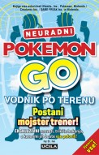

|  |
Neuradni Pokemon Go vodnik po terenu
Ivy St. IveZaložba: Učila International mehka vezava, 21,6 x 13,8 cm, 208 strani ISBN 78-961-00-3112-3 Cena: 12,99€ |
otroški in mladinski priročniki Kategorija: otroško in mladinsko > od 9 do 12 let računalništvo in tehnika otroško in mladinsko > od 4 do 8 let |
Založnik o knjigiPriročnik vsebuje veliko nasvetov in zvijač!
MILIJONI LJUDI so sprejeli izziv Pokemon Go, da bi postali največji trener vseh časov. Ker toliko ljubiteljev lovi pokemone in se z njimi bojuje, je bilo nemogoče najti prednost pred konkurenco – do zdaj. V tem vodiču so vsi nasveti, zvijače, strategije in bližnjice, ki jih potrebujete, da postanete legenda. Nekateri med njimi so:
Preden polovite vse, ujemite to knjigo! O Ivy St. Ive: VRHUNSKA PROFESIONALNA trenerka pokemonov Ivy St. Ive je desetletja zbirala namige in zvijače te franšize in se hitro uveljavila kot vodilna avtoriteta o Pokemon Go. Njeno strokovno znanje so objavili številni mediji, med njimi The New York Times, NBC, BBC, Teen Vogue, VICE in BuzzFeed.nazaj> |
||